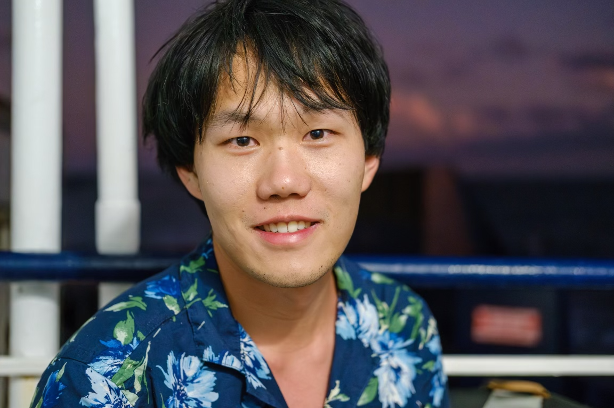

|
Di Wu
|
 |
I am a second-year Ph.D. student in the Applied Mathematics & Statistics, and Scientific Computation (AMSC) program at the University of Maryland, College Park, a program whose name is a good summary of my research interests. I am fortunate to be advised by Prof. Haizhao Yang. I also work closely with Prof. Ling Liang. I received my bachelor's and master's degrees in Computational Mathematics from Wuhan University, under the guidance of Prof. Yuling Jiao and Prof. Xiliang Lu. I also spent time as a research intern at JD Explore Academy, where I was mentored by Prof. Li Shen.
I am interested in a wide range of topics related to applied mathematics and machine learning. My recent research focuses on Bayesian statistics, optimization, and reinforcement learning.
e-mail: dwuwd 'at’ umd 'dot’ edu
|
Research
Teaching
Teaching Assistant
University of Maryland, College Park
(leading discussion sections, holding office hours, and grading)
MATH 240: Introduction to Linear Algebra
STAT 400: Applied Probability and Statistics
AMSC 460: Computational Methods
Earlier TA Experience
Wuhan University: Teaching assistant for graduate courses including Numerical Analysis, Statistical Computing, High Dimensional Data and Machine Learning, Theory and Algorithms of Machine Learning, and Advanced Engineering Mathematics.
National Tianyuan Mathematics Center: Teaching assistant for the summer school on ‘‘Mathematical Theory and Applications of Deep Learning’’.
Activities
Talks
Professional Services & Activities
Review Panelist, NASA Research Proposal Review
Co-organizer, Minisymposium on Optimal Transport, SIAM MDS 2026 (link)
Conference Reviewer: NeurIPS
Awards & Honors
Mark E. Lachtman Award, University of Maryland, 2026
Dean's Fellowship, University of Maryland, 2025, 2026
Earlier Awards & Honors
Lei Jun Educational Fund (around 5,000 USD), Wuhan University
First-Class Scholarship (Undergraduate & Graduate), Wuhan University
First Prize, Contemporary Undergraduate Mathematical Contest in Modeling (Team Leader), CSIAM
Outstanding Graduate, Wuhan University
Merit Student (3 times), Wuhan University
First Prize, National High School Mathematics Competition
First Prize, National High School Physics Competition
|